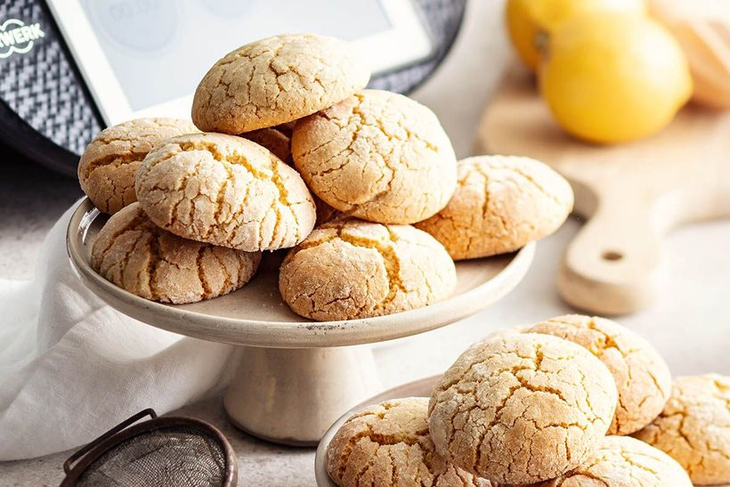

SEABEL RYM BEACH
🇫🇷
🇬🇧
🇵🇹
🇩🇪
🇮🇹
🇵🇱
🇹🇳
Zlabia
Mkharek
Ghrayba Pois Chiche
Ghrayba Farine
Ghrayba Sorgho
Makroudh
Samsa
Kaak Simple
Croquant Sésame
Biscuit à l’Orange
Biscuit au Citron
Biscuit à l’Anis
Biscuit Coco
Petit-four à la Confiture
Gâteau aux Dattes
